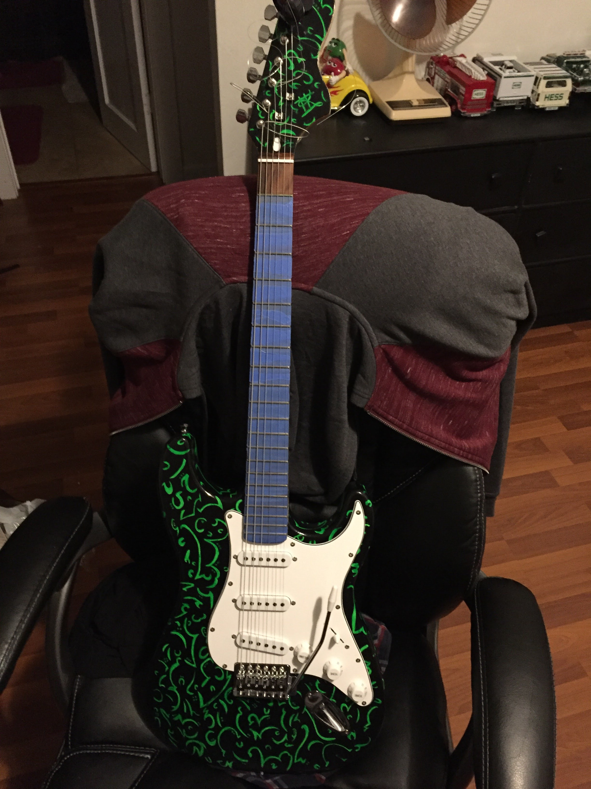

I have always been a hands-on kind of a person. I used to draw sketches a lot when I was younger but now I do not do it as often. However, I like to design and imagine as I did as I was younger. I used to spray paint patterns and designs on items of mine that I felt were too plain. I was fortunate to have older gentleman to teach me the skills of woodworking. I worked with him for almost 2 years. From the time spent working and learning the trade of woodworking, I gained inspiration for the future to design guitars or basses from old and abandon wood.
